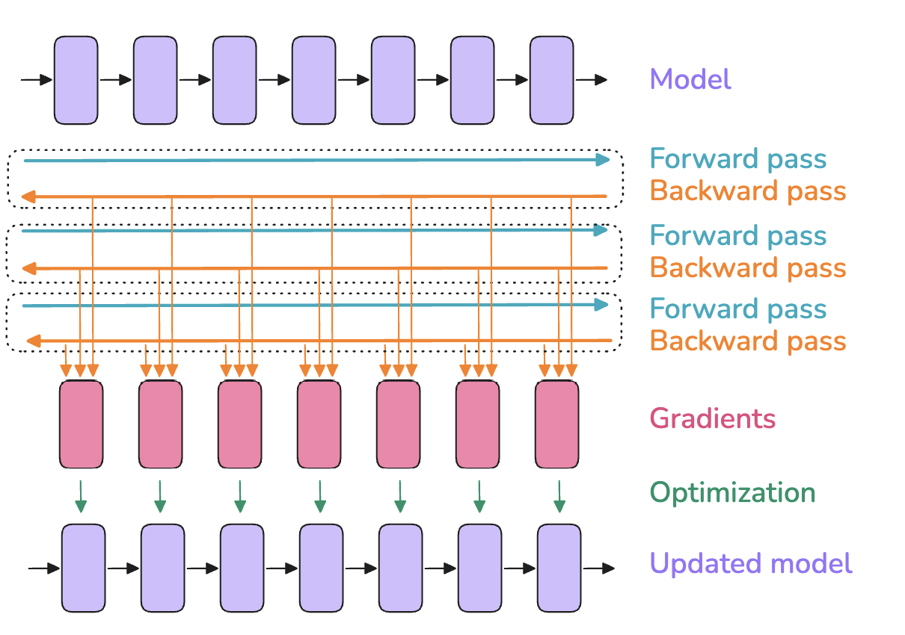
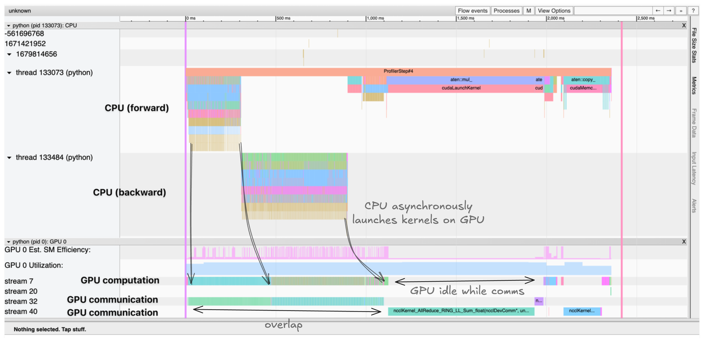

这本书要回答一个很实际的问题：把一个足够大的语言模型搬到GPU集群上、并把它练完，到底要做对哪些事。它由Hugging Face GPT训练团队逐层拆解，覆盖从单张显卡到数千卡的完整手段。我们按六篇依次精读，这一篇先讲一个最朴素也最容易忽略的起点：在一张GPU上训练时，显存究竟被谁吃掉了。
顺着全书的主线，真正支撑规模化训练的其实是三样东西之间的反复权衡：显存容量、算力效率与通信开销。读懂这三者各自如何增长、又如何在单卡这个小舞台上已经互相顶撞，后面的数据并行、ZeRO、张量与专家并行才有讨论的前提。文中的交互式图表我们一律转成文字结论，地图式速查图则用作本篇封面。
全书的每一招技巧，归根到底都在缓解下列三个挑战里的某一个或几个。第一个是显存容量，它是硬约束：如果一次训练步骤装不进显存，训练压根无法进行。第二个是算力效率，我们希望硬件把绝大多数时间花在计算上，所以要减少花在数据搬运、或者等待其他GPU干活的空转。第三个是通信开销，通信会让GPU闲置，因此要尽量用好节点内较快的带宽与节点间较慢的带宽，并尽可能让通信与计算重叠。
多数场景里能看到这三者互相置换：例如激活重算或者张量并行，本质是在显存和计算之间做交换。找到那个平衡点，正是把训练扩大到极致的最关键一步。
在把规模推进到很多张GPU之前，先快速回收一次最基础的事实：单GPU上训练一个模型通常包含三步。前向传播把输入送过模型得到输出，反向传播计算出各层的梯度，优化步骤用梯度去更新参数。后面的章节会看到这些步骤被反复拆解或交织，但起点就是这三件事。
训练开始前其实就会撞上第一个岔路：全局批量大小该怎么选。训练初期小一点的batch更有用，能较快在损失面上移动、尽早抵达较优的学习位置；但越往后，过小的batch会让梯度噪声偏大，模型可能收敛不到最优终点。反过来，大batch给出的梯度估计虽更准，却往往让每个token被用得不够充分，收敛变慢、白白浪费算力。
LLM预训练社区习惯按token而不是按样本数来汇报batch，记为bst即Batch Size in Tokens，这样训练数字不依赖具体序列长度。若输入序列长为seq，则有bst=batch×seq；之后文中若按样本给公式，乘上序列长即得token口径。
近年的LLM训练通常把每个batch落在约400万到6000万token这个甜蜜区。两代模型可作为参照：Llama 1用约400万token的batch练了1.4万亿token，DeepSeek用约6000万token的batch练了14万亿token。DeepSeek-V3/R1的做法是前469B token阶段把batch从3072个输入序列逐步抬到15360，之后的训练恒定为15360个样本。
batch也会数字化地改变总训练时间：同一份数据集上batch越小，需要的优化步骤越多，而每一步优化都很贵，所以总时长随之上升。好在最优batch附近的敏感度通常不高，偏离一点对最终性能影响有限。而当目标batch大到单卡显存装不下时，我们的第一个挑战就正式露面了。
先给一次训练步骤负责占内存的对象列个清单，一共四件：模型权重、模型梯度、优化器状态、以及反向传播所用的中间激活。这里刻意排除两个难以精确、又通常是小常量的占用者：CUDA内核大概要占1到2 GB（跑一句把张量搬到cuda上的代码再用nvidia-smi就能验证），以及缓冲、中间结果和碎片带来的杂项内存。
这些对象都以张量形式存在，而张量的形状与精度共同决定体积。形状由batch、序列长、隐藏维、注意力头数、词表大小等超参决定，也可能被后面要讲的模型切分影响。精度则是指FP32、BF16、FP8这类格式，单个数值分别占4、2、1字节，这会直接改写上面的每一项。精度各有取舍，留到混合精度章再细谈，这里先建立直觉：格式不同，显存账就算得不一样。
用PyTorch剖析器能直观看到显存分配并非静态，而在一次训练步骤里剧烈起伏。一个step的一般解剖如下：前向时激活迅速爬升，反向时梯度累积起来，随着反向逐层回传，之前为算梯度而存的激活被逐步释放；最后是优化步骤，需要把所有梯度收齐、更新优化器状态，再开启下一次前向。
第一个step之所以长得不一样，是因为torch的缓存分配器在头一次做了大量准备，预先布置好分配以加速后续步骤，使之后不必再反复搜索空闲块；另外优化器状态通常从第一个step之后才开始出现并垫高此后各步的占用。这也解释了为什么常有训练第一步成功、随后几步却OOM：不是模型突然变大，而是优化器状态在第一步之后才顶上来了。
对一个简单的Transformer语言模型，参数个数可以写得很干净：N=h×v+L×(12×h²+13×h)+2×h，其中h是隐藏维、v是词表大小、L是层数，这里省略了固定位置编码的计数。注意在隐藏维变大时，h² 这一项是唯一按平方增长的项，会最终主导参数量。
参数与梯度的显存就是参数量乘以单个参数所需字节数。在传统全精度FP32训练里，参数和梯度各占4字节，而Adam优化器还要存一阶动量与二阶方差，每种又各4字节。于是有：参数占用=4×N，梯度占用=4×N，优化器状态占用=(4+4)×N，合计每参数12字节。
换成如今主流做法时会更细：出于数值稳定性，现在一般不做全低精度，而是混合精度。默认情况是计算主体用BF16（参数、梯度各2字节），另外维护一份FP32的权重与梯度副本，所以每参数多出8字节；优化器为了稳定仍用FP32存动量与方差。落到账上就是：参数占用=2×N，梯度占用=2×N，FP32主权重副本=4×N（文献里也把这份副本称作主权重master weights），优化器状态=(4+4)×N。
这里有个容易被忽略的结论：混合精度本身并不省总显存，它只是把内存换了个分法，若梯度也用FP32累积，反而比全精度多出4字节每参数。它仍然值得用，是因为半精度跑前后向能启用GPU上更快的高效低精度算子，而且能大幅削减前向激活的显存，而激活正是下节要讲的最大头。
给不同规模模型算一笔总账，有助于建立体感（全精度与不含FP32梯度累积的BF16口径相同）：1B参数约16 GB、7B约112 GB、70B约1120 GB、405B约6480 GB；若BF16再加FP32梯度累积，则分别约为20、140、1400、8100 GB。而单张H100只有80 GB显存，可见刚到7B级别，权重与优化器的需求就已经显著越界了。FP8会再往下压，但稳定性更差、仍是活跃研究区，后面单开一章。
激活显存比前三项都难算，因为它依赖模型输入。沿用NVIDIA关于重算的原始论文对层内各算子之间所有中间激活做整体核算，可以推出混合精度下激活所需总显存的估算式：M(act)=L×seq×bs×h×(34+(5×n(heads)×seq)/h)。其中L是层数、seq是序列长、bs是以样本计的batch、h是隐藏维、n(heads) 是注意力头数。
这条式子带出一个关键观察：激活显存并不随模型规模而静态固化，而是随batch线性增长、随序列长二次方增长。所以一旦加大batch或拉长序列，率先爆炸的就是激活这一块。在bs=1的画线下可以看到，短序列时激活几乎可忽略，但从2到4k token左右起它们显著挤入显存，而参数、梯度与优化器状态的占用大体与序列长和batch无关。对长序列大batch的场景，激活就成了最重的显存负担。
激活重算也叫梯度检查点或重物化，思路非常简单：前向时丢掉一部分激活以省显存，反向时再花额外的算力把它们现场重算出来。若不重算，网络里每两个可学习算子（如前馈、层归一化）之间的隐状态都要存，反向取用；开了重算后，通常只沿架构保存少数几个关键点上的激活，其余全部丢弃，反向时从最近一个被保存的激活出发、重新执行一小段前向，把需要的部分临时算回来。本质是用算力换显存，代价是反向里多跑了一段前向子过程。
如何挑选要保存的关键激活，常用的有两条路线。其一是全量重算：在每个Transformer层之间的过渡点做检查点，相当于反向全程再补一遍完整前向，省得最多、算得也最贵，计算量与时延通常高出30% 到40%，相当可观。其二是选择性重算，可以做得比全量好：重算论文的作者详细分析过哪些激活长得最大、而按FLOPs算重算成本又最低，结论是注意力计算恰好落在这一类，于是可以丢弃它们、只对昂贵的前馈计算做检查点。
选择性重算的收益数据很能说明问题：对GPT-3级别的175B模型，它能把激活显存砍掉约70%，而算力代价仅约2.7%。近年诸如DeepSeek-V3的模型也采用选择性检查点，为了进一步压缩激活，甚至用多头潜在注意力（MLA）把注意力激活压得更小。交互式图表里那条清晰可见的走向是：序列越长、模型越小，激活占比越重，因此重算对上游小模型的好处更明显。
评估一套训练配置把加速器利用得多好时，通常要把重算计入总FLOPs。把真实落在加速器上的操作数（含重算）除以训练步时长、再除以峰值FLOPs，得到的叫硬件FLOPs利用率，即HFU。
但最终真正重要的是一份数据从头到尾练完的端到端时长。所以若某台加速器显存足够大、能跳过重算，虽然每秒执行的操作变少、HFU更低，却练得更快，它理应被奖励而非惩罚。于是有了另一种口径模型FLOPs利用率（MFU），它只把前后向必要操作计入测得的FLOPs，完全不含重算，因而更偏向描述模型本身而非训练实现。
还有个经常被忽略的加成：主流框架如今普遍使用的FlashAttention在优化里天然内建了激活重算，反向时现场重算注意力分数与矩阵而非保存它们，所以多数用FlashAttention的训练其实早已在做选择性重算。整体看，激活重算只是把FLOPs略微抬高，却显著削减了对内存的访问压力。在显存小而速度快的硬件（如GPU）上，访存通常比计算还慢，即便多做了若干操作，总效果往往不仅显存更低、算得反而更快。
激活虽经重算得到控制，却仍对batch线性增长。既然显存大头怕的是大batch，梯度累积直接对症：把一个batch拆成若干micro-batch，逐个做前向与反向各自算出梯度，再像名字暗示的那样把所有micro-batch的梯度加总，最后才做一次优化步骤。实践中优化不是在和上做、而是对梯度做平均，这样结果与累积步数无关。
记每一次前向对应的batch为微批大小mbs，把两次优化步骤之间一次走完的总量称作全局batch大小gbs：若每8次前后向才做一次优化步骤，则gbs=8×mbs，即有gbs=mbs×梯度累积步数。此前一路简称的batch size如今精确起见就改用全局batch这个称呼。
下面是梯度累积的运作示意，可以看到每个micro-batch走一遍前向与反向、梯度汇入同一批累积缓冲。

与直觉相反，梯度累积能让全局batch几乎无限地往上加，而显存占用却保持恒定，并且可以和激活重算叠加，进一步压低显存。代价藏在细节里：做累积意味着要长期保有一块贯穿整个步骤的梯度缓冲，而无累积时，反向里的梯度是在释放激活显存的同时算出来的，峰值显存本来就低一些，这块缓冲会把峰值顶回去一点。
更要紧的是它的效率账：梯度累积每做一次优化步骤就要连跑多次前向与反向，重复开销会拖慢整体训练速度。世上没有免费的午餐。不过，若看得仔细些，其实已经能发现破绽：每个micro-batch的前后向互相独立，区别只是输入样本不同，完全可以并行去跑。这一刻起，就该把训练扩展到不止一张GPU上去了，那正是下一篇的数据并行。
收尾前花一小段认识分布式训练的看门神器：剖析器。用它能看清GPU之间通信与计算到底如何发生、瓶颈卡在哪里。
PyTorch剖析器内建在框架里，可以逐毫秒录下训练时CPU与GPU两侧的真实行为。典型写法是打开profile，分别登记CPU与CUDA两类活动，设定预热与采样节奏，把trace写到文件供TensorBoard或浏览器的trace查看器可视化。产出的时间轴会暴露三条关键信息：CPU线程异步地把内核一个个派发给GPU、多条CUDA流并行处理计算与通信、以及每个内核的执行时长与内存分配。
下面的示例时间轴里，CPU线程在异步向GPU乱核，计算内核与通信在不同CUDA流上并行推进，这正是理想中大量overlap的样子。该图说明：要识别瓶颈，就看哪些本可重叠的串行计算与通信、GPU空等数据搬运的时段、CPU与GPU间的内存搬移、以及CPU端派发内核的开销。

只有看懂这些模式，优化分布式训练才有抓手。举例来说，时间轴会直接显示后面将讨论的梯度同步是否真的与反向计算重叠在了一起。至此，一台配了几张GPU的工作站呼之欲出，下一个要登场的就是把梯度累积并行化的技巧：数据并行。
参考：https://huggingface.co/spaces/nanotron/ultrascale-playbook